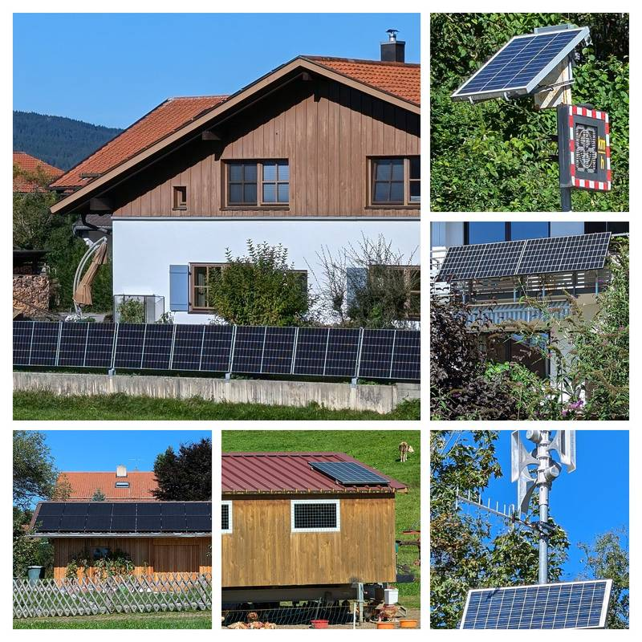

독일 '에너지 셰어링 연합', 이웃끼리 태양광 전기 나누기 막는 걸림돌 없앨 11가지 제안…"배전망 회사에 처리 기한과 불이익을"

6월부터 법으로 허용됐지만 정산 절차·스마트계량기 보급 지연·높은 비용에 막혀…협동조합·시민에너지 단체엔 "너무 복잡하거나 수지가 안 맞는다"
독일의 협회·기업·에너지협동조합이 모인 '에너지 셰어링 연합(Energy Sharing Allianz)'이 주민들이 동네에서 만든 재생에너지 전기를 함께 쓰는 '에너지 셰어링'을 실제로 굴러가게 할 11가지 제안을 내놓았다. 독일은 2026년 6월부터 에너지경제법(EnWG) 제42c조에 따라 배전망 회사가 같은 정산 구역 안에서 재생에너지 전기를 나눠 쓸 수 있게 해 줘야 하지만, 현장에서는 많은 참여자를 한꺼번에 처리할 절차가 없고 스마트계량기 보급이 더디며 정산·직접판매 비용이 높아 막혀 있다. 연합은 이 때문에 협동조합과 시민에너지 주체에게 에너지 셰어링이 너무 복잡하거나 수지가 맞지 않는다며, 배전망 회사의 신청 처리 기한을 못 박고 기한을 넘기면 금전적 불이익을 주며 연방네트워크청(BNetzA)이 늑장 회사를 적극 감독하라고 요구했다. 여러 발전설비를 묶어 쓰는 방법, 계량 데이터 접근, 남는 전기에 대한 보상, 다른 정산 방식 허용도 제안에 담겼다. 연합에 참여한 태양에너지진흥협회(SFV)의 수잔네 융 사무총장은 이웃과 태양광 전기를 나누려는 사람을 붙잡는 것은 법이 아니라 배전망 회사의 절차라며 "결과가 따르는 기한"이 확산의 지렛대라고 말했다.
시민에너지 관점
법이 허용한 지 다섯 달이 지나도 이웃끼리 전기를 나누지 못한다는 독일 사례는, 제도의 성패가 조문이 아니라 망 회사의 처리 절차와 비용에서 갈린다는 것을 보여 준다. 망 운영이 복잡해진다는 우려가 있지만, 연합의 제안처럼 처리 기한과 감독, 표준 정산 방식을 정해 두면 망 회사도 일을 예측 가능하게 처리할 수 있다. 한국도 분산에너지법과 주민참여 사업의 우선접속을 말하지만, 마을이 만든 전기를 이웃과 나누는 길은 아직 좁다. 정부와 한전은 마을 단위 전력 나눔을 시범 사업으로 열고, 신청 처리 기한과 계량 데이터 공개를 처음부터 규칙에 넣기 바란다.
출처: Solarserver 2026-11-10 기자 미표기 원문 보기
창간 전 시험 발행 기사입니다.
ドイツ「エネルギー・シェアリング同盟」、隣近所で太陽光の電気を分け合う障害を除く11の提案…「配電会社に処理期限と罰則を」
6月から法律で認められたが、精算手続き・スマートメーター普及の遅れ・高いコストで停滞…協同組合や市民エネルギー団体には「複雑すぎるか採算が合わない」
ドイツの業界団体や企業、エネルギー協同組合でつくる「エネルギー・シェアリング同盟（Energy Sharing Allianz）」が、住民が地域でつくった再生可能エネルギーの電気を共同で使う「エネルギー・シェアリング」を実際に機能させるための11の提案をまとめた。ドイツでは2026年6月からエネルギー経済法（EnWG）第42c条により、配電会社は同じ精算エリア内で再エネ電気を分け合えるようにしなければならないが、現場では多数の参加者を一度に処理する手続きがなく、スマートメーターの普及も遅く、精算や直接販売のコストも高いため停滞している。同盟は、このため協同組合や市民エネルギーの担い手にとってエネルギー・シェアリングは複雑すぎるか採算が合わないとして、配電会社の申請処理に拘束力のある期限を設け、期限を過ぎれば金銭的な不利益を科し、連邦ネットワーク庁（BNetzA）が対応の遅い会社を積極的に監督するよう求めた。複数の発電設備の組み合わせ、計量データへのアクセス、余剰電力への報酬、別の精算方式の容認も提案に盛り込まれた。同盟に参加する太陽エネルギー振興協会（SFV）のズザンネ・ユング事務局長は、隣近所と太陽光の電気を分け合おうとする人を足止めしているのは法律ではなく配電会社の手続きだとし、「結果を伴う期限」こそ普及のてこだと述べた。
市民エネルギーの視点
法律で認められて5カ月たっても隣同士で電気を分け合えないというドイツの例は、制度の成否が条文ではなく、送配電会社の手続きとコストで決まることを示している。系統運用が複雑になるという懸念はあるが、同盟の提案のように処理期限と監督、標準的な精算方式を決めておけば、配電会社も予測可能な形で業務を進められる。韓国も分散エネルギー法や住民参加事業の優先接続を掲げるが、村でつくった電気を隣人と分け合う道はまだ狭い。政府と韓国電力公社は村単位の電力シェアリングをモデル事業として始め、申請処理の期限と計量データの公開を最初からルールに盛り込んでほしい。
出典: Solarserver 2026-11-10 기자 미표기 原文を読む
創刊前の試験発行記事です。
德国"能源共享联盟"提出11项建议，清除邻里共享光伏电力的障碍："给配电公司设处理期限和罚则"
自6月起已获法律允许，却受困于结算程序、智能电表推广迟缓和高成本；对合作社和市民能源团体而言"过于复杂或不划算"
由德国行业协会、企业和能源合作社组成的"能源共享联盟（Energy Sharing Allianz）"提出11项建议，旨在让居民在本地共同使用自产可再生能源电力的"能源共享"真正运转起来。根据德国《能源经济法》（EnWG）第42c条，自2026年6月起，配电公司必须允许在同一结算区域内共享可再生能源电力，但在实践中，由于缺乏能同时处理大量参与者的流程、智能电表推广缓慢、结算和直销成本高昂，共享仍难以推进。联盟指出，目前能源共享对合作社和市民能源主体来说过于复杂或无利可图，因此要求为配电公司处理申请设定有约束力的期限、超期须承担经济后果，并由联邦网络局（BNetzA）积极监管拖延的公司。建议还涉及多个发电设施的组合、计量数据的获取、剩余电量的补偿以及允许其他结算模式。联盟成员太阳能促进协会（SFV）总干事苏珊娜·荣表示，想与邻居分享光伏电力的人被卡住，问题不在法律，而在配电公司的流程，"有后果的期限"才是推广的杠杆。
市民能源视角
法律允许五个月后邻里之间仍无法分享电力，德国的例子说明，制度成败不在条文，而在电网公司的处理流程和成本。虽然有人担心电网运营会变得复杂，但只要像联盟建议的那样定下处理期限、监管和标准结算方式，配电公司也能以可预期的方式处理业务。韩国也在讲《分布式能源法》和居民参与项目的优先接入，但村庄所发电力与邻居共享的道路仍然狭窄。希望政府和韩国电力公社以试点方式开放村级电力共享，并从一开始就把申请处理期限和计量数据公开写进规则。
来源: Solarserver 2026-11-10 기자 미표기 查看原文
本文为创刊前试发行文章。
Germany's Energy Sharing Alliance Puts Forward 11 Proposals to Clear the Hurdles to Neighbours Sharing Solar Power: "Deadlines and Penalties for Grid Operators"
Allowed by law since June but held back by settlement processes, slow smart meter rollout and high costs; for cooperatives and citizen energy groups it is "too complicated or uneconomic"
Germany's Energy Sharing Alliance, a coalition of associations, companies and energy cooperatives, has put forward 11 proposals to make energy sharing, in which residents jointly use renewable electricity produced in their neighbourhood, work in practice. Since June 2026, Section 42c of the Energy Industry Act (EnWG) has required distribution grid operators to allow renewable power to be shared within their balancing area, but in practice the scheme is held back by the lack of processes that can handle many participants at once, a slow smart meter rollout and high costs for balancing and direct marketing. Saying this leaves energy sharing too complicated or uneconomic for cooperatives and citizen energy players, the alliance called for binding deadlines for grid operators to process requests, financial consequences when they are missed, and active supervision of slow operators by the Federal Network Agency (BNetzA). The proposals also cover combining several generating plants, access to metering data, payment for surplus power and allowing alternative settlement models. Susanne Jung, managing director of the Solar Energy Promotion Association (SFV), a member of the alliance, said people who want to share solar power with their neighbours are held up not by the law but by grid operators' procedures, calling "deadlines with consequences" the lever for spreading it.
Citizen Energy View
That neighbours still cannot share power five months after the law allowed it shows that such schemes succeed or fail not on the wording of the law but on grid operators' procedures and costs. Some worry that grid operation will become more complicated, but setting processing deadlines, oversight and standard settlement methods, as the alliance proposes, lets operators handle the work predictably too. South Korea also talks about its Distributed Energy Act and priority grid access for resident-led projects, yet the path for villages to share the power they generate with their neighbours remains narrow. The government and KEPCO should open village-level power sharing as a pilot and write request deadlines and access to metering data into the rules from the start.
Source: Solarserver 2026-11-10 기자 미표기 Read the original
This article was published during the trial period before launch.